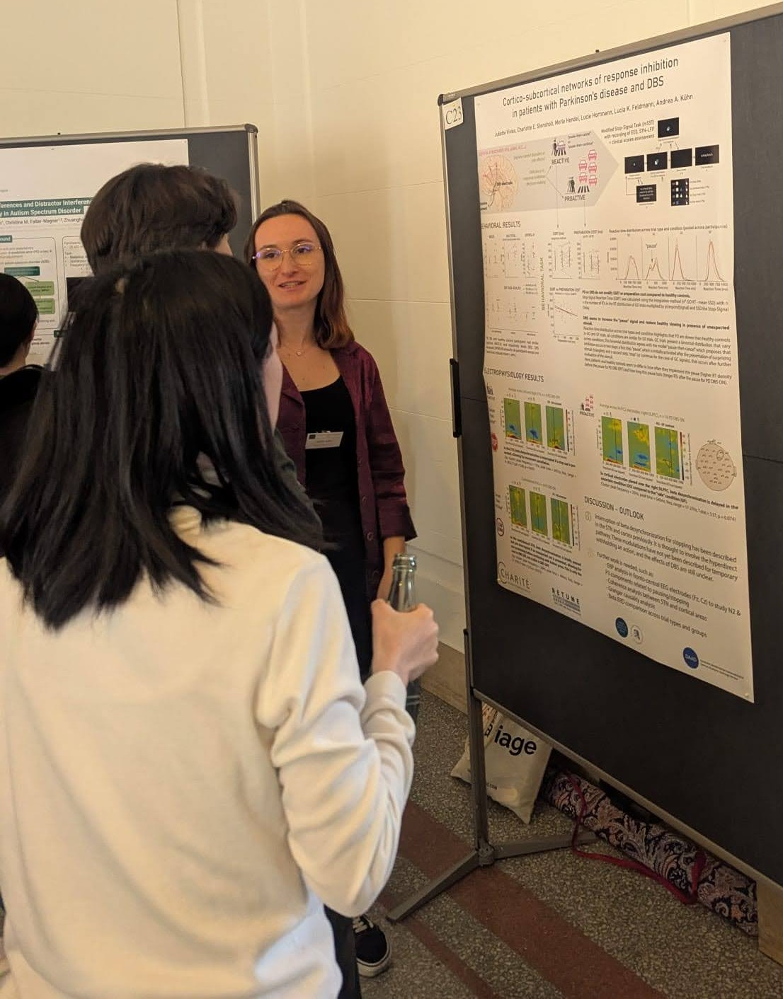
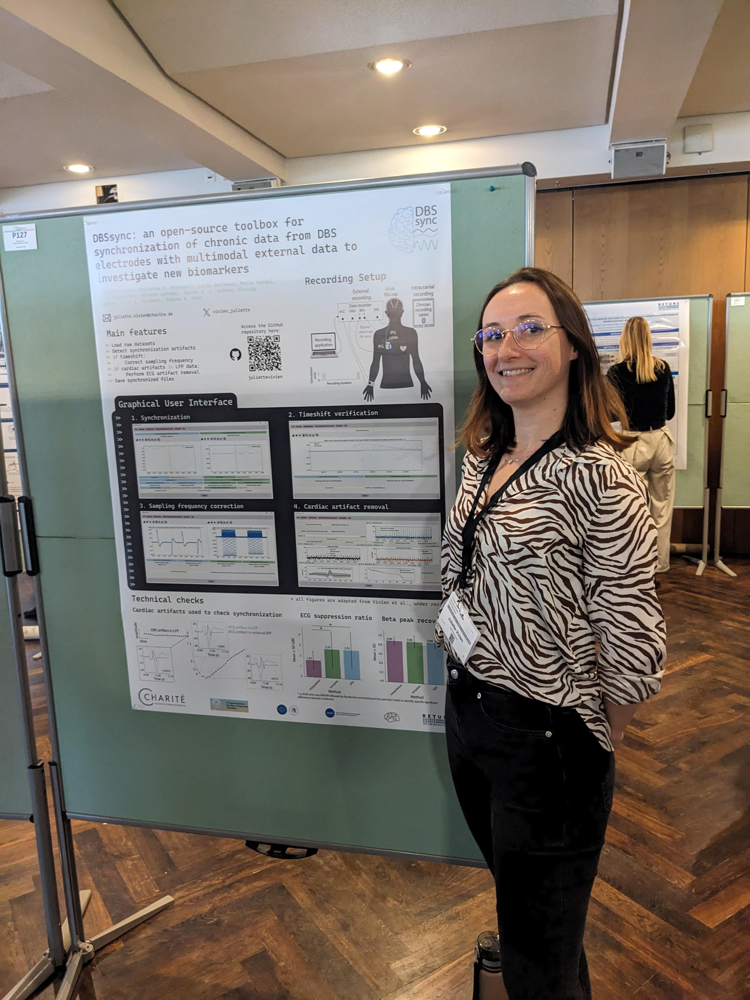
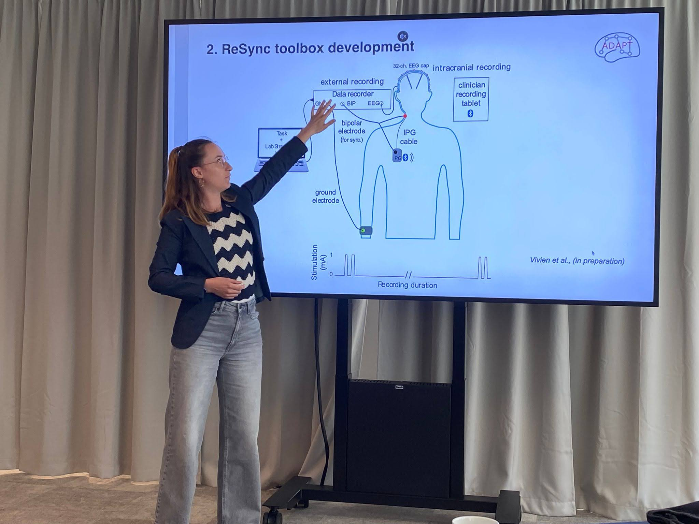
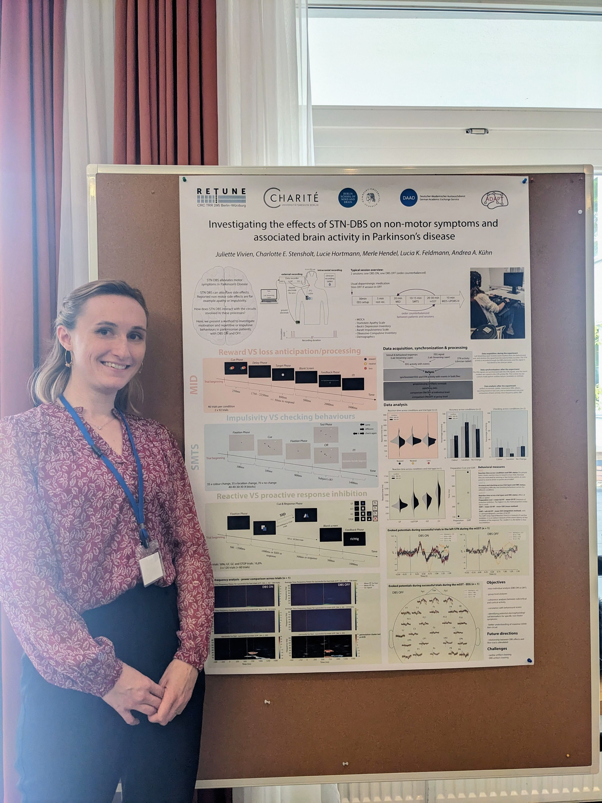
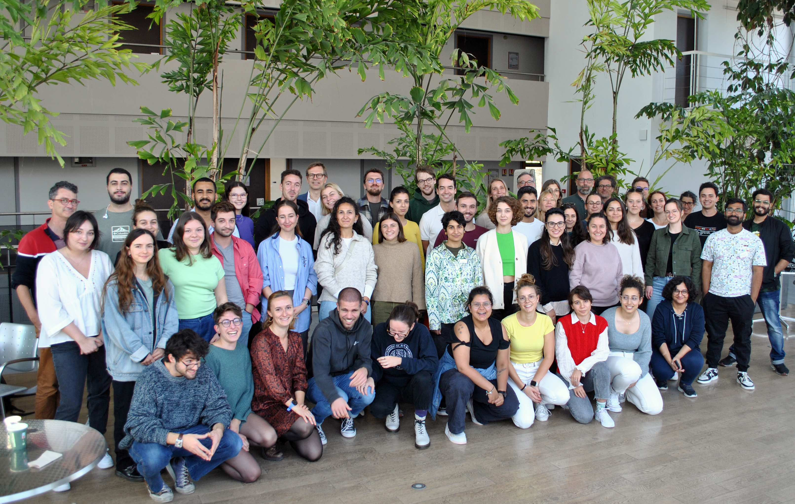
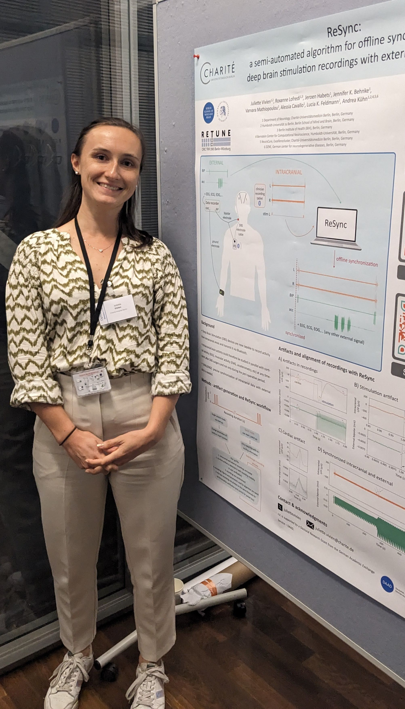
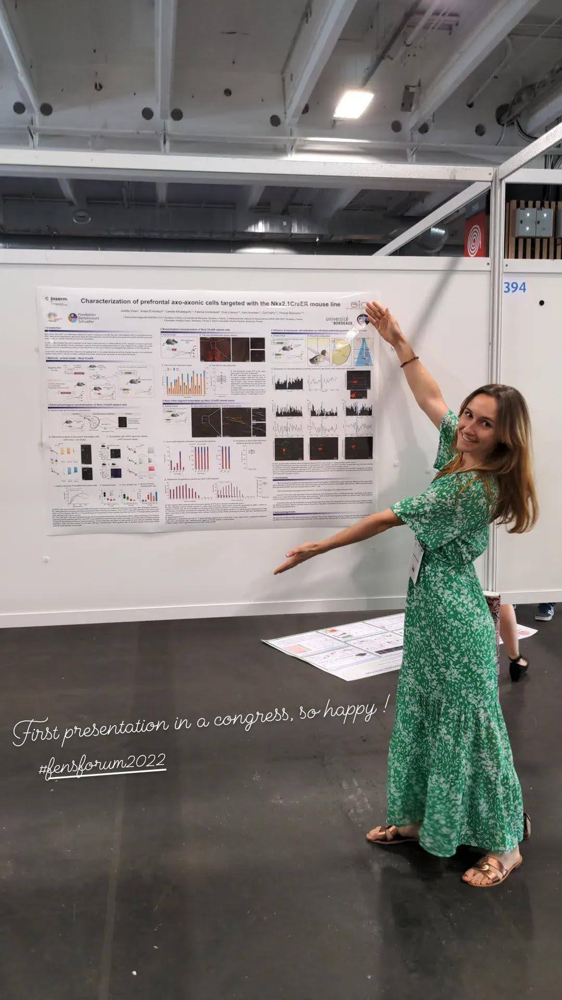
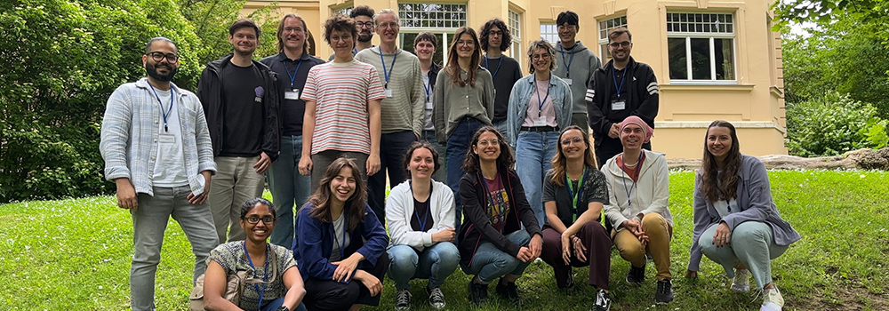
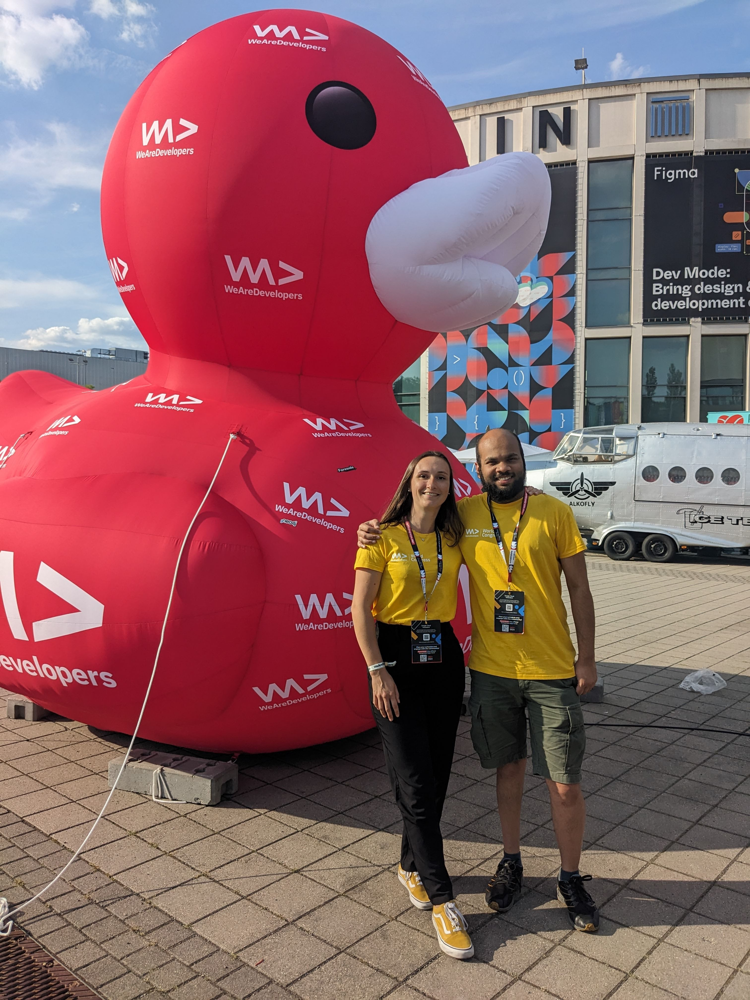
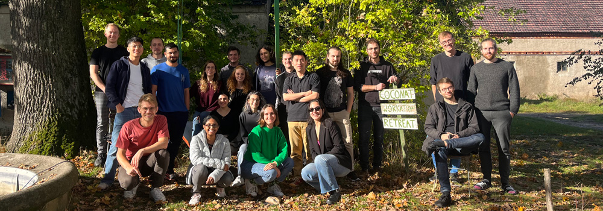

Sciences

MindBrainBody Symposium 2026
February 2026 - Wüzburg, Germany
The MindBrainBody Symposium is an annual meeting organized by the Max Plack Institute for Human Cognitive and Brain Sciences to bring together researchers from different disciplines to discuss the latest advances in cognitive neuroscience research. It brings together experts from different fields, exploring the relationships between the mind, the brain, and the body. The symposium includes talks and poster presentations on various topics related to cognitive neuroscience, including perception, attention, memory, and consciousness.
I presented a poster on preliminary data from my PhD project and had interesting conversations with other attendees from various fields.

DBS Expert Summit 2026
February 2026 - Wüzburg, Germany
The DBS Expert Summit is a biannual meeting organized by the ReTune consortium to bring together experts from all over the world to discuss the latest advances in deep brain stimulation research. The summit includes talks and poster presentations on various topics related to deep brain stimulation, including clinical applications, underlying mechanisms, and new technologies.
.It was my first participation and I learned a lot from the talks and discussions. I also had the chance to present a poster on my DBSsync toolbox and to get feedback from the other attendees.

Adapt-PD retreat 2025
May 2025 - Helsingborg, Sweden
The ADAPT-PD retreat was an occasion for the members of the ADAPT-PD consortium to meet in person and share updates on our projects. The retreat included talks and poster presentations on various topics related to deep brain stimulation translational research.
I was happy to give a joint talk with my colleague Arian Memarpouri to present my toolbox DBSsync along with his example dataset.

International Electrophysiology Skills Days 2024
October 2024 - Berlin, Germany
The International Electrophysiology Skills Days was organized for the first time in 2024. This was a collaborative effort with the Einstein Berlin-Oxford Fellowship, ReTune and AdaptPD consortia. As part of the organisation committee, our aim was to provide an informative platform for early-career researchers to share and explore skills and methods in electrophysiology research. We invited experts in the field to give talks and workshops on specific analysis/acquisition methods relevant to translational electrophysiology research.
I was happy to present a poster on our latest project.

ADVANCED TOOLS FOR DATA ANALYSES IN NEUROSCIENCE - Summer School Strasbourg 2024
September 2024 - Strasbourg, France
I would definitely recommend this summer school to anyone interested in learning more about data analysis in neuroscience. The program was very well organized and covered a wide range of topics, from basic data analysis techniques to more advanced methods. The instructors were very knowledgeable and provided clear explanations of the concepts and techniques. I also appreciated the opportunity to work on real data sets and to apply the techniques we learned in a practical setting during the hands-on sessions on the last 2 days!

OptoDBS conference 2024
June 2024 - Geneva, Switzerland
The Opto-DBS conference is a translational conference on clinical and underlying mechanisms of deep brain stimulation. This was my first time publicly presenting my toolbox (called ReSync at the time) and I had the chance to get very useful feedback from the audience.

Fens Forum 2022
July 2022 - Paris, France
At the end of my position as a research assistant in the lab of Dr. Cyril Herry at the Neurocentre Magendie in Bordeaux, I had the opportunity to display my work on chandelier cells at the Fens Forum in Paris in 2022. This was a great experience to share my work with the neuroscience community and to get feedback on my project. I also had the chance to attend many interesting talks and to network with other researchers in the field.
I am very thankful to Thomas Bienvenu for giving me the opportunity to work as a research assistant under his guidance. This experience was very enriching and helped me grow on a professional and personal level.
Programming

ReTune Hackathon 2025
June 2025 - Weimar, Germany
Two years after my first Hackathon, I was part of the organisation team (with Elisa Garulli, Öykü Okur and Richard Köhler) for a second Hackathon in Weimar. This year, our project focused on trying to predict behavioral response from neural features. We have developed a pipeline with different models (linear discriminant analysis, logistic regression) and even trained a baby neural network.

We Are Developers Conference 2024
July 2024 - Berlin, Germany
I had the opportunity to attend the We Are Developers Conference in Berlin in July 2024 as a volunteer with my friend Malav. This conference is one of the largest developer events in Europe, bringing together thousands of developers, tech enthusiasts, and industry leaders from around the world. It was an incredible experience to be part of such a vibrant and dynamic community of developers.

ReTune Hackathon 2023
October 2023 - Bad Belzig, Germany
I had the opportunity to attend the ReTune Hackathon in Berlin in October 2023. This was my first hackathon experience and to be honest also my first steps in data analysis. Our project was focused on the investigation of the relationship between spiking and neural oscillations.
Here is a link to the GitHub repository hosted by my teammate Moritz Gerster.